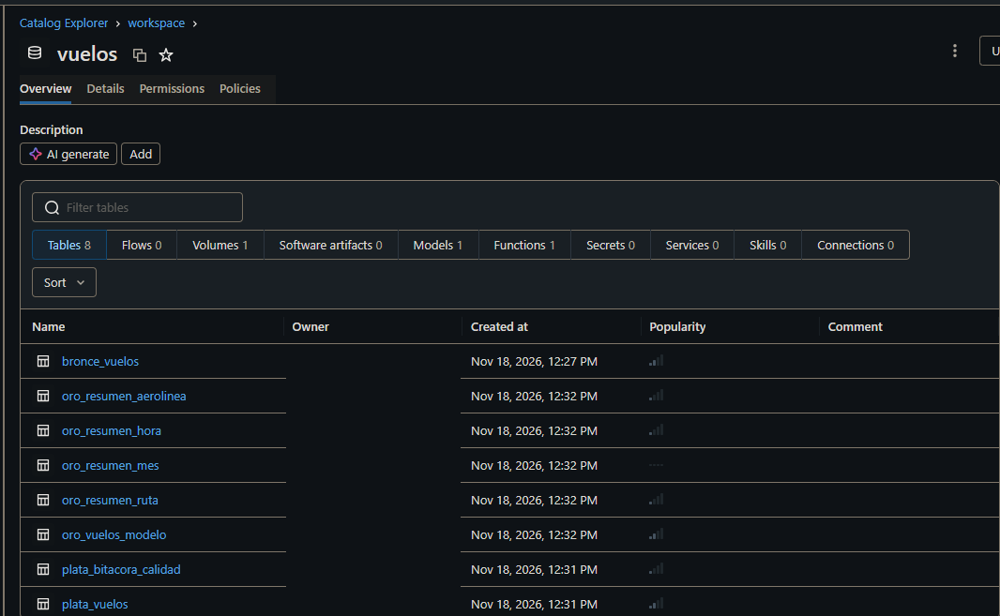
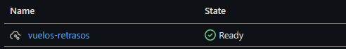
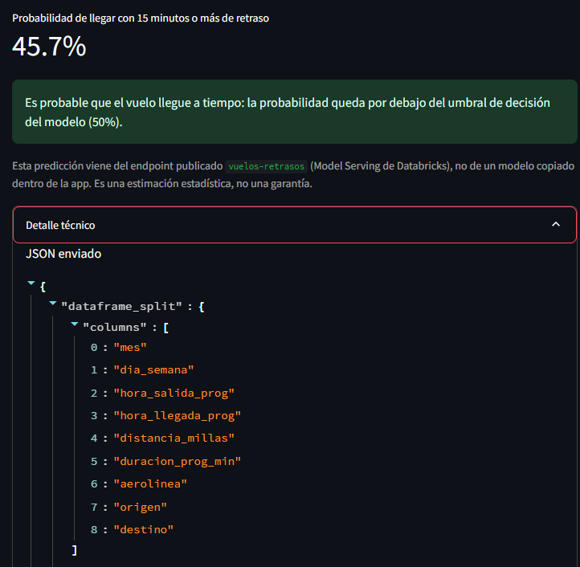

Proyecto finalBig Data · Databricks
Predecir si un vuelo llega 15 minutos tarde, con datos que conoces antes de despegar.
Arquitectura7,079,061 vuelos · 12 meses de 2024
BTS → Volumen → Bronce → Plata → Oro → Modelo → Endpoint → App · Job: bronce, plata y oro
Limpieza y transformaciónCriterio 1 · 35 pts

Bitácora de calidadCriterio 1 · 35 pts
Bronce 7,079,061 → Tipos 0 → Nulos −2 → Duplicados 0 → Imposibles −23 → Plata 7,079,036
Problema y métricaCriterio 2 · 10 pts
Decir siempre "a tiempo" acierta 80.5 % y nunca detecta un retraso: F1 = 0.
Detecta el 57 % de los retrasos · ROC-AUC 0.673
Publicación del modeloCriterio 3 · 25 pts
Petición → ¿tipos correctos? no: 400 → ¿reglas cumplidas? no: 400 → Modelo → 200 probabilidad

Aplicación de consultaCriterio 4 · 30 pts

App → Endpoint · 200: probabilidad · 400: mensaje claro · 504 o tiempo agotado: reintenta · respuesta inválida: aviso
LlegadaResumen
Siguiente paso: agregar el clima.